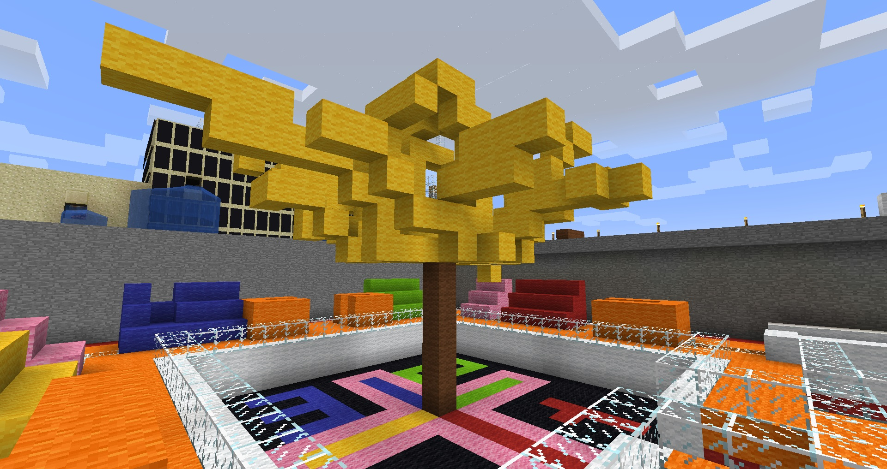
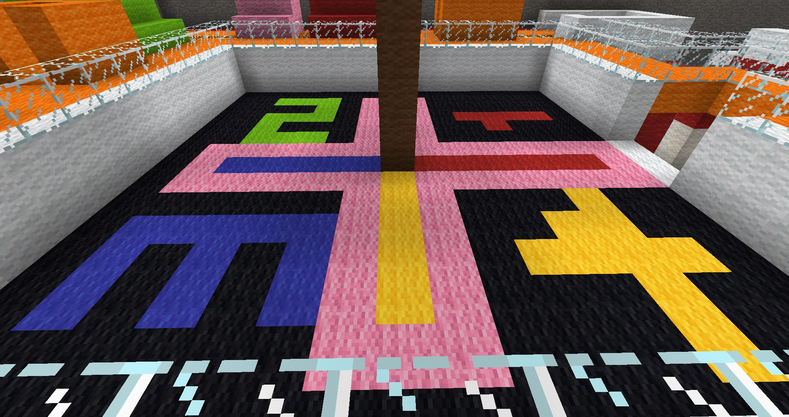

I know it does not look like what I want it to be, but it is a yellow blossom tree. In Vietnamese culture, yellow blossom tree is displayed in every house during Tet - Vietnamese New Year event. It represents luck, love, and wealth. The bigger the tree, the richer the owner. The branches of a yellow blossom do not usually follow any pattern, so it is hard to properly transfer it to Minecraft. Below the tree is a parchis board. It is a common game that Vietnamese people play during Tet festival. I also build a stadium around it to replicate an affluent atmosphere. During this specific event, families would gather around the yellow blossom trees, play some cardboard games, and share memories of the previous year.
Yellow Blossom Tree
Parchis board
Back to landing page